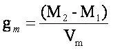

Standard Proctor Test
OBJECTIVE
For determination of the relation between the water content and the dry density of soils using light compaction.
REFERENCE STANDARD
IS: 2720(Part 7)-1980- Methods of test for soils: Determination of water content-dry density relation using light compaction.
EQUIPMENTS & APPARATUS
Cylindrical mould & accessories [volume = 1000cm3]
Rammer [2.6 kg]
Balance [1g accuracy]
Sieves [19mm]
Mixing tray
Trowel
Graduated cylinder [500 ml capacity]
Metal container
PREPARATION SAMPLE
Obtain a sufficient quantity (10 kg) of air-dried soil and pulverize it. Take about 5 kg of soil passing through 19mm sieve in a mixing tray.
PROCEDURE
1. 5 Kg. of soil is taken and the water is added to it to bring its moisture content to about 4 % in coarse grained soils and 8% in case of fine grained soils with the help of graduated cylinder
2. The mould with base plate attached is weighed to the nearest 1 gm (M1). The extension collar is to be attached with the mould.
3. Then the moist soil in the mould is compacted in three equal layers, each layer being given 25 blows from the 2.6 Kg rammer dropped from a height of 310 mm. above the soil.
4. The extension is removed and the compacted soil is leveled off carefully to the top of the mould by means of a straight edge.
5. Then the mould and soil is weighed to the nearest 1 gm. (M2).
6. The soil is removed from the mould and a representative soil sample is obtained water content determination.
7. Steps 3 to 6 are repeated after adding suitable amount of water to the soil in an increasing order.
CALCULATION
Bulk density, gm in g/cm3 at each compacted specimen is calculated from the equation.
where Vm = volume of mould in cm3
The dry density, gd, in g/cm3, is calculated from the equation.
where w = moisture content of soil in percent.
The dry densities, gd obtained in a series of determinations are plotted against the corresponding moisture content. A smooth curve is then drawn through the resulting points and the position of the maximum on this curve is determined.
REPORT
The maximum dry density in g/cm3 is to be reported to the nearest 0.01 and the optimum moisture content is to be reported to the nearest 0.5.
SAFETY & PRECAUTIONS
1. Use hand gloves & safety shoes while compacting.
2. Adequate period (about 15 minutes for clayey soils and 56 minutes for coarse grained soils) is allowed after mixing the water and before compacting into the mould.
3. The blows should be uniformly distributed over the surface of each layer.